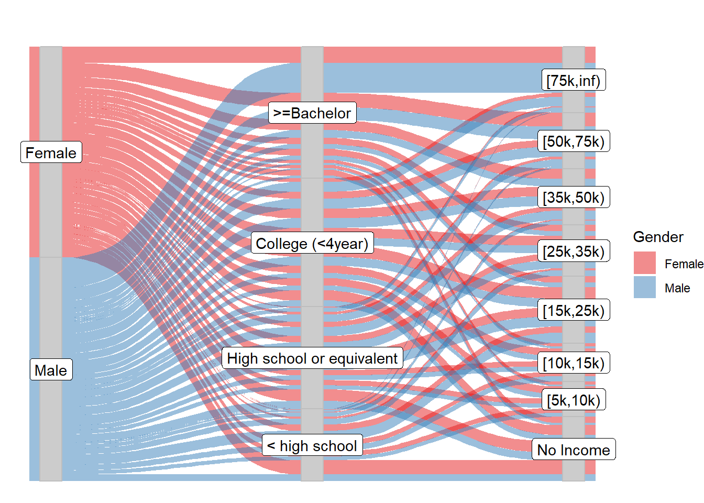

Chapter 5 Results
This is the overall data preprocessing
data<-read.csv(file = 'ca-educational-attainment-personal-income-2008-2014.csv', header = TRUE)
data_p<-data %>% filter(Age == '18 to 64')
data_p$Educational.Attainment<-factor(data_p$Educational.Attainment,
levels = c("Bachelor's degree or higher","Some college, less than 4-yr degree",
"High school or equivalent","No high school diploma"))
data_p$Personal.Income<-factor(data_p$Personal.Income,
levels = c('$75,000 and over','$50,000 to $74,999','$35,000 to $49,999','$25,000 to $34,999',
'$15,000 to $24,999','$10,000 to $14,999','$5,000 to $9,999','No Income'))
data_p$Year<-fct_recode(data_p$Year,
"2008"='01/01/2008 12:00:00 AM',"2009"='01/01/2009 12:00:00 AM',
"2010"='01/01/2010 12:00:00 AM',"2011"='01/01/2011 12:00:00 AM',
"2012"='01/01/2012 12:00:00 AM',"2013"='01/01/2013 12:00:00 AM',
"2014"='01/01/2014 12:00:00 AM')
data_p$Educational.Attainment<- fct_recode(data_p$Educational.Attainment,
">=Bachelor" = "Bachelor's degree or higher","College (<4year)" = "Some college, less than 4-yr degree",
"High school or equivalent" = "High school or equivalent","< high school" = "No high school diploma")
data_p$Personal.Income<- fct_recode(data_p$Personal.Income,
"[75k,inf)"='$75,000 and over',"[50k,75k)"='$50,000 to $74,999',"[35k,50k)"='$35,000 to $49,999',
"[25k,35k)"='$25,000 to $34,999',"[15k,25k)"='$15,000 to $24,999',"[10k,15k)"='$10,000 to $14,999',
"[5k,10k)"='$5,000 to $9,999','No Income'='No Income')All candidate plots are as follows.
5.1 Static
5.1.1 Alluvial
#make it a function in convenience to plot by year
plot_alluvial<-function(year=0){
if (!year==0){
data_alluvial <- data_p %>% filter(Year == year) %>%
group_by(Gender, Educational.Attainment, Personal.Income) %>%
summarise(Freq = sum(Population.Count)) %>% ungroup()
}else{
data_alluvial <- data_p %>% group_by(Gender, Educational.Attainment, Personal.Income) %>%
summarise(Freq = sum(Population.Count)) %>% ungroup()
}
p<-ggplot(data = data_alluvial, aes(y = Freq, axis1 = Gender, axis2 = Educational.Attainment,
axis3 = Personal.Income))+
geom_alluvium(aes(fill = Gender), width = 1/6) +
geom_stratum(width = 1/12, fill = "grey80", color = "grey") +
geom_label(stat = "stratum",
aes(label = after_stat(stratum))) +
scale_x_discrete(expand = c(.05, .05)) +
scale_fill_brewer(type = "qual", palette = "Set1") +
ggtitle("") +
theme_void()
return (p)
}
plot_alluvial()
#If we omit educational attempt, relation between gender and income are clearer.
#Or maybe stacked bar?
data_alluvial_2 <- data_p %>% group_by(Gender, Personal.Income) %>%
summarise(Freq = sum(Population.Count)) %>% ungroup()
ggplot(data = data_alluvial_2, aes(y = Freq, axis1 = Gender, axis2 = fct_rev(fct_relevel(Personal.Income,'No Income'))))+
geom_alluvium(aes(fill = Gender), width = 1/6) +
geom_stratum(width = 1/12, fill = "grey80", color = "grey") +
geom_label(stat = "stratum",
aes(label = after_stat(stratum))) +
scale_x_discrete(expand = c(.05, .05)) +
scale_fill_brewer(type = "qual", palette = "Set1") +
ggtitle("") +
theme_void()#Over years
data_alluvial_year <- data_p %>% group_by(Gender, Educational.Attainment, Personal.Income) %>%
summarise(Freq = sum(Population.Count), Year = Year) %>% ungroup()
#If we use facet, too small for observation
ggplot(data = data_alluvial_year, aes(y = Freq, axis1 = Gender, axis2 = Educational.Attainment,axis3 = Personal.Income))+
geom_alluvium(aes(fill = Gender), width = 1/6) +
geom_stratum(width = 1/12, fill = "grey80", color = "grey") +
geom_label(stat = "stratum",
aes(label = after_stat(stratum))) +
scale_x_discrete(expand = c(.05, .05)) +
scale_fill_brewer(type = "qual", palette = "Set1") +
facet_wrap(vars(Year))+
ggtitle("") +
theme_void()#Do it separately for each year
#We make the alluvial plot a function: plot_allvial as shown above
p1<-plot_alluvial(2008)
p2<-plot_alluvial(2009)
p3<-plot_alluvial(2010)
p5<-plot_alluvial(2012)
p6<-plot_alluvial(2013)
p7<-plot_alluvial(2014)###stacked bar
#filter on data_p when making function
#make it a function
plot_stackedbar<-function(year = 0){
if(year == 0){
data_stack <- data_p %>%
group_by(Educational.Attainment, Personal.Income) %>%
summarise(Freq = sum(Population.Count)) %>% ungroup()
}else{
data_stack <- data_p %>% filter(Year == year) %>% group_by(Educational.Attainment, Personal.Income) %>%
summarise(Freq = sum(Population.Count)) %>% ungroup()
}
colors <- rev(brewer.pal(8,'Blues'))
mosaic(Personal.Income ~ Educational.Attainment ,direction = c('v','h'),
data_stack, highlighting_fill = colors,
labeling = labeling_border(tl_labels = c(TRUE,TRUE), rot_labels = c(5,0,0,60)))
}
plot_stackedbar()
Do we need draw supposed bar for comparison?
#Over years
plot_stackedbar(2008)
plot_stackedbar(2009)
plot_stackedbar(2010)plot_stackedbar(2011)plot_stackedbar(2012)plot_stackedbar(2013)plot_stackedbar(2014)###faceted stacked bar
library(ggmosaic)
data_facet <- data_p %>% group_by(Gender, Educational.Attainment, Personal.Income) %>%
summarise(Freq = sum(Population.Count), Year =Year) %>% ungroup()
colors <- rev(brewer.pal(8,'Blues'))
#mosaic(Personal.Income ~ Gender ,direction = c('v','h'),
#data_facet, highlighting_fill = colors,
#labeling = labeling_border(tl_labels = c(TRUE,TRUE), rot_labels = c(5,0,0,60)))
#Notice that once library ggmosaic is loaded, mosaic can no longer be used
#In ggmosaic, y is in reverse order#in ggmosaic, y is in reverse order. We change the level order before we make a plot
data_facet$Personal.Income<- fct_rev(data_facet$Personal.Income)
ggplot(data_facet)+
geom_mosaic(aes(weight = Freq, x = product(Gender), fill = Personal.Income))+
scale_fill_manual("legend", values = c("[75k,inf)" = colors[1], "[50k,75k)" = colors[2],
"[35k,50k)" = colors[3], "[25k,35k)" = colors[4],
"[15k,25k)" = colors[5], "[10k,15k)" = colors[6],
"[5k,10k)" = colors[7], "No Income" = colors[8]))+
facet_wrap(vars(Educational.Attainment))#Is the gap between rich and poor affected by gender?
ggplot(data_facet)+
geom_mosaic(aes(weight = Freq, x = product(Educational.Attainment), fill = Personal.Income))+
scale_fill_manual("legend", values = c("[75k,inf)" = colors[1], "[50k,75k)" = colors[2],
"[35k,50k)" = colors[3], "[25k,35k)" = colors[4],
"[15k,25k)" = colors[5], "[10k,15k)" = colors[6],
"[5k,10k)" = colors[7], "No Income" = colors[8]))+
facet_wrap(vars(Gender))#Or maybe we don't need include education factor? In the stackedbar.R
#What can we say?
#Over years
ggplot(data_facet)+
geom_mosaic(aes(weight = Freq, x = product(Educational.Attainment), fill = Personal.Income))+
scale_fill_manual("legend", values = c("[75k,inf)" = colors[1], "[50k,75k)" = colors[2],
"[35k,50k)" = colors[3], "[25k,35k)" = colors[4],
"[15k,25k)" = colors[5], "[10k,15k)" = colors[6],
"[5k,10k)" = colors[7], "No Income" = colors[8]))+
facet_grid(rows = vars(Gender), cols = vars(Year))